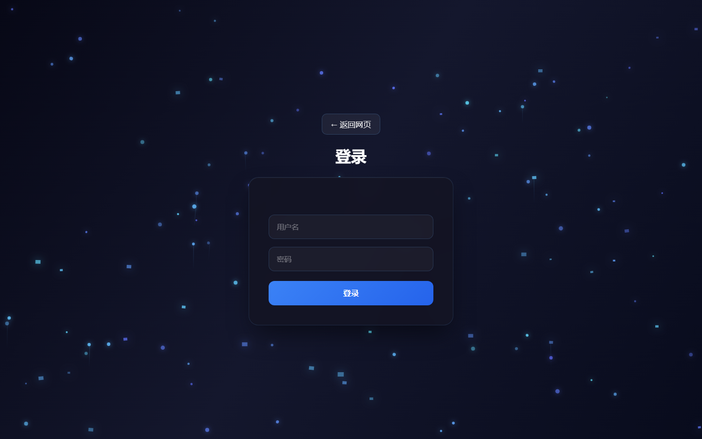
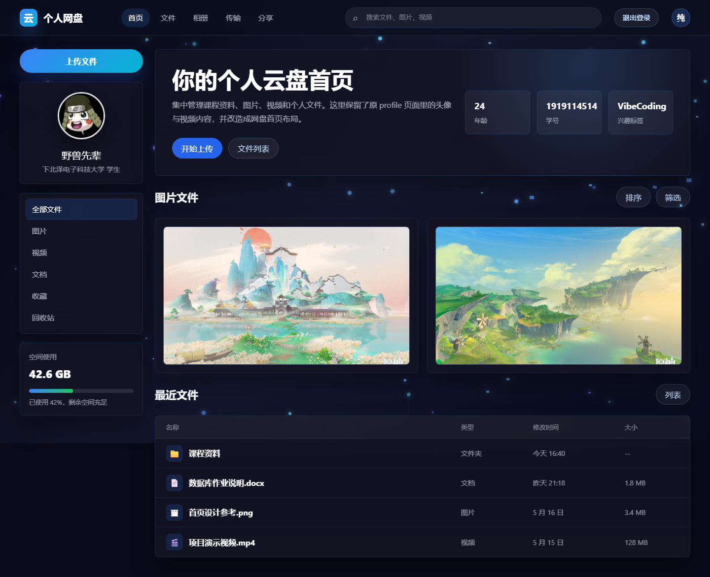
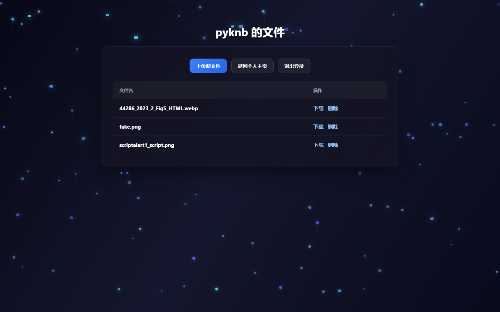
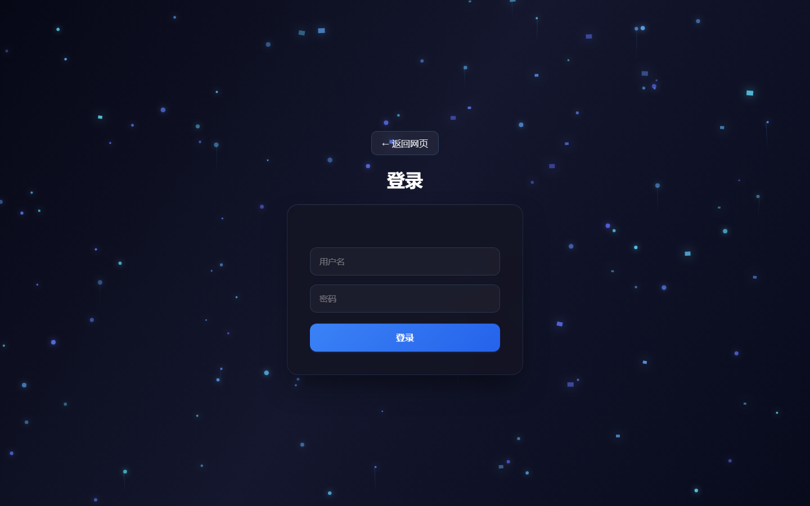
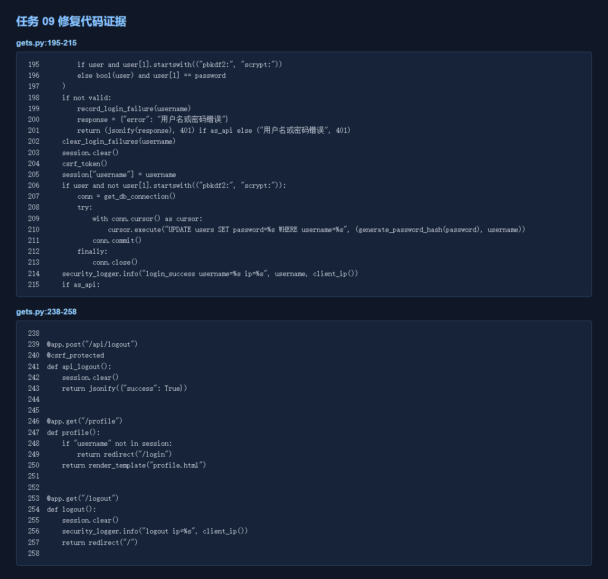

本报告按附录A记录阶段二任务9的修复和验证。
是否能按攻击方步骤复现：修复前基线已记录；修复后原始参数应被拦截或不产生越权效果。
复现环境：本机 127.0.0.1:5001。





相关文件：gets.py、相关模板和前端 API 客户端。
相关函数或接口：/login、/logout、/profile、/api/files；Flask Session。
问题代码/根因：会话生命周期和 Cookie 属性需要显式安全配置。
修改文件：gets.py。
修改前逻辑：缺少统一安全边界或校验。
修改后逻辑：启用 HttpOnly、SameSite=Lax 和可选 Secure；登录成功前清理旧 Session；退出 session.clear()；核心接口统一认证。
修改文件：相关 HTML/CSS/前端 API（按任务适用）。
修改后逻辑：页面和客户端与服务端安全校验保持一致，不能替代服务端校验。
使用攻击方原始步骤重新测试：
1. 发送原始无害测试参数。
2. 观察状态码、页面、数据、文件和日志。
3. 确认原攻击失效并保存截图。
统一错误提示、输入长度限制、安全日志、Cookie 安全属性、调试模式关闭和生产密钥配置要求。
课程组别、负责人、Git tag 等元数据需在提交前填写；HTTPS 部署时启用 Secure Cookie；Web 服务器需确认上传目录不可执行。